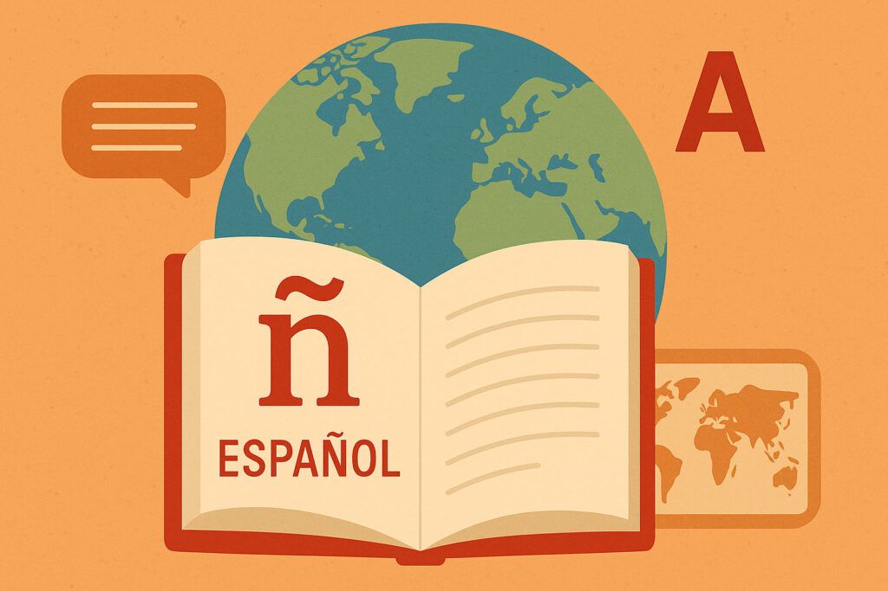
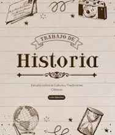

Formamos docentes con sólidas competencias en lengua y literatura, capaces de motivar el gusto por la lectura y escritura en los estudiantes de secundaria.
Promovemos la formación de ciudadanos responsables, críticos y participativos a través de la enseñanza de valores, derechos humanos y democracia.
Capacitamos a futuros docentes para enseñar la historia de México y del mundo, fortaleciendo la identidad cultural y el pensamiento analítico en los estudiantes.
Desarrollamos competencias en la enseñanza del idioma inglés, promoviendo habilidades de comunicación efectiva en contextos académicos y cotidianos.